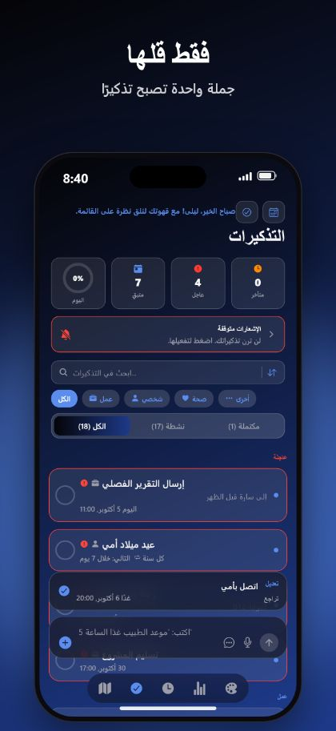
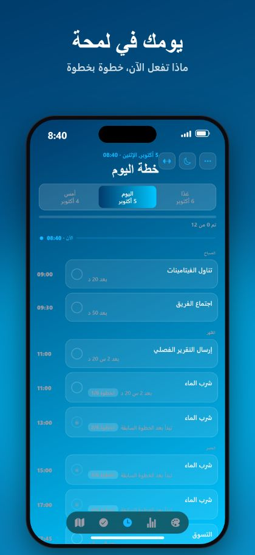
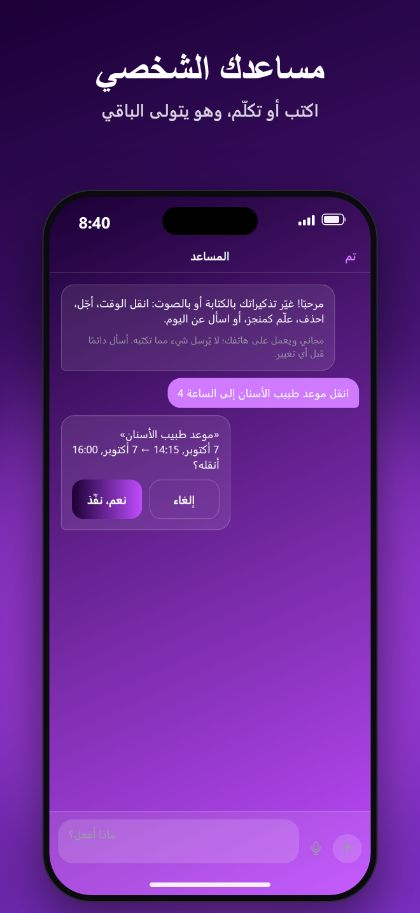

دون لمس مع سيري
قل «يا سيري، أضف تذكيرًا مع RemindMe». يسأل سيري عن اليوم والوقت ويحفظه دون فتح التطبيق.
يحوّل RemindMe جملة واحدة، مكتوبة أو منطوقة، إلى تذكير بالتاريخ والوقت والتكرار الصحيحين. دون قوائم أو نماذج.
مجاني على iPhone وiPad. بلا حساب وبلا إعلانات.



اتصل بأمي غدًا الساعة 8 مساءًالاتصال بأمي · غدًا، 8:00 مساءً
تناول الدواء كل يوم الساعة 9 و21تناول الدواء · كل يوم، 9:00 صباحًا و9:00 مساءً
اشرب الماء كل ساعتين بين 9 و21شرب الماء · كل ساعتين، من 9:00 إلى 21:00
منبّه غدًا الساعة 6:30منبّه · غدًا، 6:30 صباحًا
قل «يا سيري، أضف تذكيرًا مع RemindMe». يسأل سيري عن اليوم والوقت ويحفظه دون فتح التطبيق.
في iOS 26 يمكن للتذكير أن يرنّ كمنبّه حقيقي، حتى في الوضع الصامت أو التركيز.
ضع مكانًا على الخريطة ويذكّرك عند وصولك أو مغادرتك، حتى والتطبيق مغلق.
خطة يومية تعرض ما تبقّى لهذا اليوم فقط، مع تقويم وسلاسل وتأجيل.
لا حساب. لا إعلانات. لا تتبع. تبقى تذكيراتك على iPhone وiPad الخاصين بك.
تخطيط رحب للشاشات الكبيرة، وكل الاتجاهات، وSplit View، وأدوات مصغّرة ومظاهر جميلة.
RemindMe تطبيق تذكيرات لـ iPhone وiPad. تكتب جملة أو تقولها فينشئ تذكيرًا بالتاريخ والوقت والتكرار الصحيحين.
RemindMe مجاني للتنزيل وبلا إعلانات.
لا. لا يوجد حساب ولا تسجيل. تبقى تذكيراتك على جهازك.
نعم. قل «يا سيري، أضف تذكيرًا مع RemindMe». يسأل سيري عن اليوم والوقت ويحفظ التذكير دون فتح التطبيق. كما يعمل «أضف تذكيرًا مفصّلًا» و«أضف تذكير مكان».
في iOS 26 وما بعده، نعم. يستطيع RemindMe تشغيل منبّه حقيقي يرنّ حتى في الوضع الصامت أو التركيز.
التركية والإنجليزية والفرنسية والألمانية والعربية، بما في ذلك الجمل الطويلة وعدة تذكيرات دفعة واحدة.
نعم. لا حساب ولا إعلانات ولا تتبع، وتبقى تذكيراتك على جهازك.